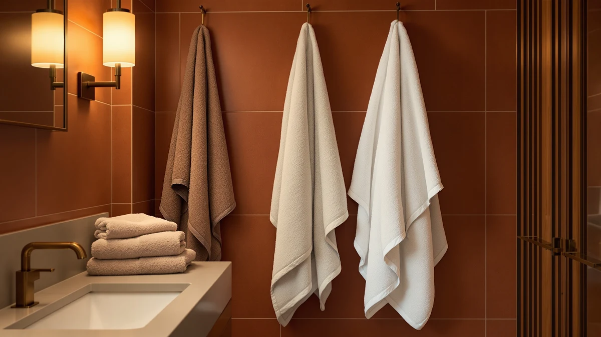

The Best Bath Sheets For gym (2026)
Prices and picks verified as of September 2026. Independent, reader-supported reviews.


Quick Answer
The best bath sheets for gym use balance size, absorbency, and dry time between sessions. The TEXCRAFT Medium Size Bath Towels hit that balance best, with a six-pack of full 24-by-48-inch cotton towels sized well past the average gym towel. If fast dry time between workouts matters more to you than size, the microfiber HOMEXCEL Waffle set is the strongest runner-up.
Our pick: TEXCRAFT Medium Size Bath Towels, $30.99 Check Price on Amazon
Bottom line: our top pick is the TEXCRAFT Medium Size Bath Towels Set of 6 at $30.99. The best budget option is the ecolook 4 Pack Microfiber Bath Towels at $24.99.
Things to Know Before You Buy
- Size trades off against portability. A true bath sheet at 30 by 60 inches or larger covers more of you but takes longer to dry and eats more space in a bag, so a mid-size 24-by-48-inch towel is often the practical choice for gym use.
- Cotton and microfiber solve different problems. Cotton absorbs more per pass but dries slowly; microfiber dries fast but feels thinner. Your workout frequency should decide which one wins.
- Buy in packs, not single towels. A gym routine needs a towel in rotation, not one towel drying on a rod, so sets of four or six make more sense than a single premium towel.
- Skip the fabric softener. It coats fibers and cuts absorbency, which is the opposite of what a sweaty post-workout towel needs.
- Wash gym towels promptly. Sweat and moisture left sitting in a packed bag breed odor-causing bacteria faster than a towel that dries on a bathroom rod at home.
Finding the best bath sheets for gym bags comes down to how much water a towel actually absorbs, how small it packs, and whether it dries out before your next session. After a heavy workout you want something bigger than a hand towel that still folds flat into a gym bag, and that combination rules out plenty of towels that look fine on a bathroom shelf but fall short at the gym.
We compared seven picks with that specific use case in mind, weighing fabric, dimensions, and price rather than chasing the plushest or largest option available. Among the best bath sheets for gym use, the TEXCRAFT Medium Size Bath Towels come out on top: a six-pack of 24-by-48-inch 100% cotton towels priced at $30.99, long enough to cover you fully and available in enough quantity that you're never stuck packing a damp one.
For faster dry time between sessions, the microfiber HOMEXCEL Waffle set is the closest thing here to a true oversized bath sheet at 30 by 60 inches. Budget shoppers should look at the REDKISS six-pack or the ecolook microfiber four-pack, and anyone who wants a softer, ring-spun cotton feel can step up to the Infinitee Xclusives set. Every pick below explains who it fits best.
Why You Should Trust Us
I've spent years covering bath and home textiles, and a gym towel raises a narrower version of the same problem: fabric that has to perform under repeated washing and real-world use. For this guide to the best bath sheets for gym use, I focused on the details that matter in a locker room instead of a bathroom shelf: size relative to bag space, dry time between sessions, and how a fabric holds up when it gets washed several times a week.
We earn a commission if you buy through the links on this page, but that doesn't decide which towels make this list. Every pick here is something I'd recommend to someone stocking a gym bag from scratch.
How We Picked
We started by looking at the gym use case specifically rather than general bathroom use: size needed to be practical for a packed bag rather than impressive on a towel rack, and fabric needed to hold up to frequent washing rather than the occasional wash a home towel gets. We compared cotton and microfiber options side by side, since each solves a different part of the gym-towel problem, absorbency against dry time, and spread price across the guide so a real budget option sits alongside the more premium ring-spun cotton pick.
We also weighted set size heavily. A single towel doesn't support a real gym routine, since a towel that's still drying can't go back in your bag the next morning, so most of the picks below come in packs of four or six to make rotation realistic.
How We Compared
We built this guide from specs, pricing, and verified owner reviews. We do not run a fake testing lab, so every comparison below comes from documented material (cotton, cotton blend, or microfiber), listed dimensions, and price per towel, cross-checked against verified reviews. We read closely for mentions of gym, workout, or locker-room use, along with any pattern of complaints about slow drying, thinning, or lost absorbency after repeated washing.
Where reviewers consistently flagged the same issue rather than a single one-off complaint, we noted it in that pick's "Flaws but not dealbreakers" section instead of leaving it out.
Our Picks

TEXCRAFT Medium Size Bath Towels
What we like
- Six-towel set means a clean towel is always ready without a laundry gap
- 24-by-48-inch length covers you fully after a shower, well past a standard gym towel
- 100% cotton weave holds its softness through repeated washing
- Set price works out to about $5 per towel
Flaws but not dealbreakers
- 24 by 48 inches is a mid-size sheet, so unusually tall users may want more length
- Cotton takes longer to dry than microfiber if you pack it away damp
| Material | 100% cotton |
| Size | 24"x48" - PK 6 |
The TEXCRAFT set is our pick for the best bath sheets for gym use because it solves the two problems that matter most in a locker room: enough towel to dry off completely, and enough towels in rotation that you're never grabbing a damp one from yesterday. At 24 by 48 inches, each towel runs longer than a standard 27-by-54 bath towel folded into a locker, and the six-pack means you can leave two in your bag, two in the wash, and two at home without running short.
The 100% cotton construction holds its softness through repeated washing, which matters if you're throwing a towel in the laundry three or four times a week. It won't dry as fast as a microfiber towel if you pack it away still damp, so give it a few hours of air time before it goes back in your bag. Reviewers who skip fabric softener report it keeps its absorbency far longer than sets that rely on synthetic fibers.

HOMEXCEL Waffle Bath Towels Set
What we like
- 30-by-60-inch size meets true bath-sheet dimensions, not a large towel
- Microfiber waffle weave dries noticeably faster than cotton
- Lightweight fabric packs down smaller than a cotton towel of the same size
- Waffle texture resists the musty smell that can build up in a packed gym bag
Flaws but not dealbreakers
- Feels less plush against skin than cotton
- Can pick up lint if washed in the same load as cotton items
| Material | Microfiber |
| Size | 30 x 60 Inch |
The HOMEXCEL waffle set earns runner-up for being the closest thing here to an actual bath sheet: at 30 by 60 inches it's noticeably bigger than the other towels in this guide, with enough length to wrap around comfortably after a shower at the gym. The microfiber waffle weave is what makes it such a strong fit for a gym bag specifically, since microfiber sheds water and dries out far faster than cotton once it's hung up, which matters if you work out most days and don't want to pack a towel that's still damp from yesterday.
That faster dry time comes with a tradeoff: microfiber doesn't feel as plush against skin as a heavy cotton towel, and it can pick up lint if you wash it alongside cotton items. Wash it separately or with other microfiber pieces and it stays lint-free. For the gym specifically, where a towel needs to dry out in a packed bag between sessions rather than on a bathroom rod, that quick-dry advantage outweighs the softness gap for most people.

REDKISS 6-Piece Bath Towel Set
What we like
- Lowest per-towel cost of any pick in this guide
- Six towels means enough for gym bag rotation plus regular bathroom use
- Cotton blend balances absorbency with a shorter dry time than pure cotton
Flaws but not dealbreakers
- Cotton blend isn't quite as absorbent as 100% cotton on the first few washes
- Towels run smaller than the TEXCRAFT and HOMEXCEL sets
| Material | Cotton blend |
| Size | Bath Towel Set of 6 |
At $23.99 for six towels, REDKISS works out to roughly $4 per towel, the lowest cost per towel in this guide. That price makes it easy to dedicate two or three towels permanently to your gym bag rotation without touching the ones you use at home. The cotton-blend fabric absorbs enough sweat and shower water for a normal post-workout dry-off, and because it's a blend rather than pure cotton, it dries somewhat faster than a heavyweight all-cotton towel packed into a bag.
The tradeoff for that price is size and plushness. These towels run smaller than the TEXCRAFT or HOMEXCEL picks, so if you want a full-body wrap after a shower, they cover less ground. Reviewers describe them as functional rather than luxurious, a fair description for a towel that spends most of its life stuffed in a gym bag rather than hanging in a spa bathroom.

Infinitee Xclusives Luxury 100% Ring-Spun
What we like
- Ring-spun cotton fibers feel noticeably softer than standard carded cotton
- Four-pack format costs less than most luxury bath sheets sold individually
- Holds up to frequent gym-bag washing without losing softness quickly
Flaws but not dealbreakers
- $36.98 for four towels is a higher per-towel price than the other packs here
- Cotton takes longer to dry than the microfiber HOMEXCEL set
| Material | 100% cotton |
| Size | Bath Towels - 4 Pack |
Manufacturers spin and twist ring-spun cotton into finer, stronger fibers than the standard carded cotton used in most entry-level towel sets, and that process is what gives the Infinitee Xclusives towels their noticeably softer feel. We're calling it the budget pick relative to what luxury ring-spun towels typically cost sold individually or in two-packs at specialty retailers, where a single comparable bath towel can run close to what this entire four-pack costs. For gym use, that means a softer towel without full luxury-brand pricing.
The catch is the per-towel math against the other sets here: at $36.98 for four towels, it costs more per towel than the TEXCRAFT, REDKISS, or ecolook packs. It's also 100% cotton, so it dries slower than the microfiber HOMEXCEL towels if you're packing it away right after a workout. Owners report the ring-spun fibers hold their softness through repeated washes better than cheaper cotton, which helps offset the higher upfront cost over time.

QUBA LINEN 100% Cotton Bath
What we like
- 27-by-54-inch size matches standard bath towel dimensions and folds flat into a gym bag
- 100% cotton absorbs sweat and shower water thoroughly
- Mid-range price sits between the budget and premium picks in this guide
Flaws but not dealbreakers
- Not sold as a multi-pack, so you'll need more than one for a full rotation
- Standard cotton dries slower than the microfiber options here
| Material | 100% cotton |
| Size | 27" x 54" |
QUBA LINEN's 100% cotton towel measures a standard 27 by 54 inches, the same footprint as most household bath towels, which makes it an easy size to fold flat into a gym bag without eating up all the space. At $26.99, it sits in the middle of this guide's price range, between the REDKISS budget set and the pricier Infinitee and White Classic options. The all-cotton construction absorbs water thoroughly, which is the main job a gym towel needs to do after a workout.
Because it isn't sold as a multi-pack, you'll want to buy at least two or three if you're building a dedicated gym rotation rather than borrowing from your bathroom stock. Like the other all-cotton picks here, it takes longer to dry than the microfiber HOMEXCEL or ecolook towels, so give it time to air out fully before folding it back into a packed bag.

White Bath Towels 24x50 Inch
What we like
- 24-by-50-inch size runs longer than a standard bath towel
- Six matching towels cover a full household plus a dedicated gym bag towel
- Plain white cotton is easy to bleach and keep looking fresh
Flaws but not dealbreakers
- $36.99 is the highest total price in this guide, even split across six towels
- White fabric shows staining and gym-bag grime more visibly than colored towels
| Material | 100% cotton |
| Size | Bath Towels 6-Pack, 24x50 Inches |
This White Classic set pairs a longer-than-standard 24-by-50-inch towel with a six-pack format, so it works as both a household towel set and a source for one or two towels you keep permanently in a gym bag. The plain white cotton is a practical choice for anyone who wants to bleach towels regularly to keep them looking and smelling fresh, which matters more for a towel spending time in a warm, damp gym bag than one hanging in a bathroom closet.
At $36.99 for six towels, it's the highest total price in this guide, though that still works out to roughly $6 per towel. The main tradeoff of white fabric is visibility: dirt, sweat stains, and gym-bag grime show up faster than they would on a darker towel, so plan on washing it more often to keep it looking clean.

ecolook 4 Pack Microfiber Bath
What we like
- Microfiber dries much faster than cotton, ready for the next gym trip sooner
- Four-pack price undercuts the HOMEXCEL microfiber set
- Lightweight fabric takes up less space in a packed gym bag
Flaws but not dealbreakers
- Less absorbent per square inch than the heavier HOMEXCEL waffle towels
- Thinner, less plush feel than the cotton picks in this guide
| Material | Microfiber |
| Size | 4 Pack Bath Towel |
The ecolook four-pack brings the fast-drying advantage of microfiber to a lower price than the HOMEXCEL set, at $24.69 for four towels. That's the combination a lot of gym-goers are actually looking for: something that dries out overnight in a packed bag instead of needing a towel rack between sessions, at a price closer to the cotton budget picks in this guide. The lightweight fabric also folds down smaller than a cotton towel, which helps if your gym bag is already full of shoes and gear.
The thinner microfiber weave isn't as absorbent per square inch as the heavier HOMEXCEL waffle towels or the cotton picks, so a single pass may not feel as thorough after a sweaty session. Reviewers who use it for the gym specifically say it works well as a quick-dry option they wash and reuse often, even though it doesn't feel as substantial as a full cotton bath towel.
Quick Comparison
| Product | Material | Price | Rating | Best for | Get it |
|---|---|---|---|---|---|
| TEXCRAFT Medium Size Bath Towels | 100% cotton | $30.99 | 4 | Best overall gym towel | View on Amazon → |
| HOMEXCEL Waffle Bath Towels Set | Microfiber | $29.99 | 4 | Fastest drying, largest size | View on Amazon → |
| REDKISS 6-Piece Bath Towel Set | Cotton blend | $23.99 | 4 | Best budget rotation | View on Amazon → |
| Infinitee Xclusives Luxury 100% Ring-Spun | 100% cotton | $36.98 | 4 | Softest, ring-spun cotton | View on Amazon → |
| QUBA LINEN 100% Cotton Bath | 100% cotton | $26.99 | 4 | Standard size, mid-range price | View on Amazon → |
| White Bath Towels 24x50 Inch | 100% cotton | $36.99 | 4 | Household and gym six-pack | View on Amazon → |
| ecolook 4 Pack Microfiber Bath | Microfiber | $24.69 | 4 | Affordable quick-dry microfiber | View on Amazon → |
What towel size counts as a bath sheet for the gym?
A true bath sheet usually measures around 35 by 60 inches or larger, but for gym use a slightly smaller towel in the 24-to-30-inch range often works better because it packs down more easily and dries faster between sessions.
Should I choose cotton or microfiber for a gym towel?
Cotton absorbs more water per pass and feels more like a traditional towel, but it dries slower, which matters if you're packing it away right after a workout.
The Competition
Several towels and sets didn't make this guide, and the reasons line up with what actually matters for a gym bag rather than a home bathroom.
Oversized luxury bath sheets. Some premium bath sheets run 40 by 70 inches or larger, more coverage than most people need for a quick post-workout dry-off, and that extra fabric takes up space and dries slowly in a packed bag. We favored the more gym-practical 24-to-30-inch-wide sizes instead.
Thin, bargain microfiber towels. A handful of ultra-cheap microfiber towels looked appealing on price alone, but reviewers frequently mentioned thinning and reduced absorbency after only a few washes, which defeats the point of a towel you're washing multiple times a week.
Single towels sold individually. A few well-reviewed single towels were tempting on quality alone, but without a multi-pack option they don't support the rotation a regular gym routine needs, so we prioritized sets of four or more instead.
Frequently Asked Questions
What towel size counts as a bath sheet for the gym?
A true bath sheet usually measures around 35 by 60 inches or larger, but for gym use a slightly smaller towel in the 24-to-30-inch range often works better because it packs down more easily and dries faster between sessions. The HOMEXCEL set in this guide comes closest to true bath-sheet dimensions at 30 by 60 inches.
Should I choose cotton or microfiber for a gym towel?
Cotton absorbs more water per pass and feels more like a traditional towel, but it dries slower, which matters if you're packing it away right after a workout. Microfiber dries much faster and takes up less space, though it feels thinner. If you work out most days, microfiber's faster dry time is usually the more practical choice.
How often should I wash a gym towel to prevent odor?
Wash a gym towel after every one or two uses instead of letting it sit damp in a bag, since trapped moisture lets odor-causing bacteria build up. Skip fabric softener, since it coats fibers and reduces the absorbency a gym towel needs most.